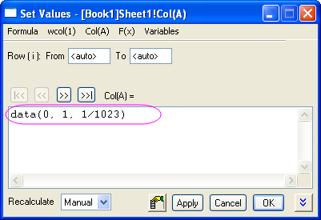

Wavelet
Wavelet
Zusammenfassung
Wavelet-Transformationen sind nützlich, um Signale zu analysieren, in denen plötzliche Änderungen der Phase und Frequenz, lokalen Maxima und Minima oder zugehörigen Parametern auftreten. Wavelet-Transformationen sind ein beliebtes Hilfsmittel bei der Zeit-Frequenz-Analyse, insbesondere für die Analyse der nicht-stationären Signale. OriginPro bietet Hilfsmittel der Wavelet-Transformationen sowohl für kontinuierliche als auch für diskrete Transformationen.
Was Sie lernen werden
Dieses Tutorial zeigt Ihnen, wie Sie:
- eine einstufige diskrete Wavelet-Zerlegung durchführen und das Signal aus Approximationskoeffizienten und Detailkoeffizienten rekonstruieren.
- die mehrstufige diskrete Wavelet-Zerlegung anwenden.
- eine kontinuierliche Wavelet-Transformation durchführen.
- mit Hilfe der Wavelet-Transformation Rauschen aus Signalen entfernen.
- eine 2D-Wavelet-Zerlegung und Rekonstruktion der Matrixdaten durchführen.
- ein Bild in Matrixdaten konvertieren.
- mehrere Diagrammfenster zu einem zusammenfügen.
1D-Wavelet-Transformation
Zerlegung
- Öffnen Sie eine leere Arbeitsmappe. Wählen Sie Hilfe: Ordner öffnen: Sample-Ordner ... im Menü, um den Ordner "Samples" zu öffnen. Öffnen Sie in diesem Ordner den Unterordner Signal Processing. Dort befindet sich die Datei Chirp Signal.dat. Ziehen Sie diese Datei per Drag&Drop in das leere Arbeitsblatt, um sie zu importieren.
- Markieren Sie Spalte B und wählen Sie im Menü Analyse: Signalverarbeitung: Wavelet: Zerlegen, um den Dialog Decompose: dwt zu öffnen.
- Wählen Sie im Dialog DB6 für Wavelet-Typ & Ordnung und Mit Nullen auffüllen für den Erweiterungsmodus.
- Klicken Sie auf OK, um den Dialog zu schließen und die Approximations- und Detailkoeffizienten auszugeben.
- Markieren Sie Spalte B, C und D (die Spalten C und D sollten Ihre Approximationskoeffizienten bzw. Ihre Detailkoeffizienten enthalten). Wählen Sie im Menü Zeichnen: Mehrere Felder: Gestapelt, um den Dialog Stack: plotstack zu öffnen.
- Deaktivieren Sie in diesem Dialog das Kontrollkästchen Layer verknüpfen im Zweig Optionen. Aktivieren Sie unten das Kontrollkästchen Automatische Vorschau, um das Vorschaudiagramm im rechten Bedienfeld anzuzeigen.
- Klicken Sie auf OK, um den Dialog zu schließen und das Stapeldiagramm zu erstellen.

Hinweis: Um Stufe 2 (3, 4 etc.) der diskreten Wavelet-Zerlegung durchzuführen, wiederholen Sie Schritt 2 bis 4 für Approximationskoeffizienten (hier Spalte C in unserem Beispiel). Die mehrstufige Wavelet-Zerlegung (verfügbar in OriginPro) wird unten erläutert.
Rekonstruktion
Eine Rekonstruktion stellt die inverse Operation der Zerlegung dar. In diesem Beispiel wird das Signal aus dem Ergebnis des obigen Abschnitts wiederhergestellt.
- Markieren Sie Spalte C und D (Ihre Approximationskoeffizienten und Detailkoeffizienten von oben).
- Wählen Sie im Menü Analyse: Signalverarbeitung: Wavelet: Rekonstruktion, um den Dialog Reconstruction: idwt aufzurufen.
- Um das Signal zu rekonstruieren, brauchen Sie den gleichen Wavelet-Typ und Rand. Setzen Sie daher die Optionen auf DB6 bzw. Mit Nullen aufgefüllt.
- Klicken Sie auf OK, und das wiederhergestellte Signal wird in der Spalte E des Arbeitsblatts erzeugt.
- Drücken Sie die Strg-Taste und markieren Sie Spalte B und E. Wählen Sie dann im Menü Zeichnen: Linie: Liniendiagramm, um mit diesen beiden Datenspalten ein Diagramm zu erstellen.

- Sie können aus dem sich ergebenden Diagramm ersehen, dass das ursprüngliche Signal und das wiederhergestellte Signal sich überlagern.
Mehrstufige Wavelet-Zerlegung
- Öffnen Sie eine neue Arbeitsmappe und importieren Sie dann die gleichen Daten wie im Abschnitt Zerlegung oben.
- Markieren Sie Spalte B und wählen Sie im Menü Analyse: Signalverarbeitung: Wavelet: Mehrfach-Skala DWT, um den Dialog Multi-Scale DWT: mdwt zu öffnen.
- Legen Sie in dem Dialog den Erweiterungsmodus auf Mit Nullen aufgefüllt und die Zerlegungsstufen mit 3 fest. Klicken Sie auf die dreieckige Schaltfläche rechts von Multiple Koeffizientendaten und wählen Sie [<Eingabe>]<Eingabe> im Menü.
- Klicken Sie auf OK, um die Ergebnisse der diskreten Wavelet-Zerlegung der dritten Stufe zu erhalten. Die Koeffizienten werden in dem gleichen Arbeitsblatt wie das Eingabesignal gespeichert.
- Markieren Sie alle Spalten in dem Arbeitsblatt und wählen Sie dann im Menü Zeichnen: Mehrere Felder: Gestapelt, um den Dialog Stack: plotstack zu öffnen. Klicken Sie auf die Pfeilschaltfläche rechts von Dialogdesign und wählen Sie Systemstandard. Aktivieren Sie das Kontrollkästchen Automatische Vorschau unten im Dialog, um eine Vorschau des Diagramms anzuzeigen.
- Klicken Sie auf OK. Das sich ergebende Diagramm wird unten gezeigt.
Kontinuierliche Wavelet-Transformation
- Öffnen Sie eine neue Arbeitsmappe mit zwei leeren Spalten (Spalte A und B) in einem einzelnen Arbeitsblatt.
- Markieren Sie Spalte A und wählen Sie Spaltenwerte errechnen im Kontextmenü. Der Dialog Werte setzen wird geöffnet. Geben Sie im Textfeld data(0, 1, 1/1023) ein und klicken Sie auf Anwenden. Spalte A wird mit Daten gefüllt.
- 
- Klicken Sie auf die Schaltfläche >>, um Spalte B auszuwählen. Geben Sie sin(1,5/(0,25-col(A)))+cos(0,2/(0,2-col(A))) ein und klicken Sie auf OK.
- Erstellen Sie eine Zeichnung, um zu sehen, wie die Daten aussehen. Wählen Sie bei markierter Spalte B im Menü Zeichnen: Einfache 2D: Liniendiagramm.

- Fügen Sie bei aktivem Arbeitsblatt eine neue Spalte zu dem Arbeitsblatt hinzu, indem Sie im Menü Spalte: Spalten hinzufügen wählen. Übernehmen Sie in dem geöffneten Dialog den Standardwert 1 bei und klicken Sie auf OK.
- Spalte C wird zu dem Arbeitsblatt hinzugefügt. Alternativ können Sie mit der rechten Maustaste auf die Arbeitsblattspalte klicken und im Kontextmenü Spaltenwerte errechnen wählen. Geben Sie in dem Textfeld data(1, 512) ein und klicken Sie auf OK.

- Markieren Sie Spalte B und C und wählen Sie dann im Menü Analyse: Signalverarbeitung: Wavelet: Kontinuierliches Wavelet, um den Dialog Continuous Wavelet: cwt zu öffnen.
- Setzen Sie in dem Dialog den Wavelet-Typ auf MexHat und aktivieren Sie Koeffizientenmatrix.
- Klicken Sie auf OK, um den Dialog zu verlassen.
- Die Koeffizienten werden in einem neuen Arbeitsblatt und einer Matrix ausgegeben, zusammen mit einem Konturdiagramm. Klicken Sie zum Öffnen des Dialogs Details Zeichnung doppelt auf die Zeichnung. Wählen Sie die Registerkarte Farbplatte und klicken Sie auf die Überschrift Füllung. Der Dialog Füllung mit den Farbkontrollelemente wird geöffnet. Klicken Sie auf Palette laden und wählen Sie Pumpkin Patch im Menü Palette auswählen. Bestätigen Sie mit OK, um den Dialog Details Zeichnung zu schließen.
- Klicken Sie auf OK, um die Farbe des Konturdiagramms zu ändern. Das Diagramm sollte nun folgendermaßen aussehen.

Entfernen von Rauschen mit Wavelet-Transformation
- Öffnen Sie ein leeres Arbeitsblatt. Wählen Sie Hilfe: Ordner öffnen: Sample-Ordner ... im Menü, um den Ordner "Samples" zu öffnen. Öffnen Sie in diesem Ordner den Unterordner Signal Processing. Dort befindet sich die Datei Signal with Shot Noise.dat. Ziehen Sie diese Datei per Drag&Drop in das leere Arbeitsblatt, um sie zu importieren.
- Aus den Sparklines oben im Bild lässt sich ersehen, dass in dem Signal einiges an Schrotrauschen vorhanden ist. Markieren Sie Spalte B und wählen Sie im Menü Analyse: Signalverarbeitung: Wavelet: Entrauschen, um den Dialog Entrauschen: wtdenoise aufzurufen.
- Aktivieren Sie das Kontrollkästchen Automatische Vorschau, um Ihr Ergebnis in der Vorschau zu sehen. Setzen Sie Wavelet-Typ auf DB9, Erweiterungsmodus auf Mit Nullen aufgefüllt, Schwellenwert-Typ auf sqtwolog und Stufe mit Schwellenwert auf 7.
- Klicken Sie auf OK, um das Schrotrauschen aus dem Signal zu entfernen. Die Ergebnisse werden in den Arbeitsblattspalten C und D ausgegeben.
- Markieren Sie alle Spalten in dem Arbeitsblatt und wählen Sie dann im Menü Zeichnen: Linie: Liniendiagramm, um ein Diagramm mit dem ursprünglichen und dem "gesäuberten" Signal zu erstellen. Sie können feststellen, dass das Schrotrauschen entfernt wurde.
2D-Wavelet-Transformation
2D-Wavelet-Zerlegung
- Öffnen Sie eine neue Matrixmappe. Wählen Sie im Menü Daten: Aus Datei importieren: Bild in Matrix... und importieren Sie das Bild <Origin-Verzeichnis>\Samples\Image Processing and Analysis\Car.bmp.
- Zu Beginn müssen Sie das Bild in Daten umwandeln. Um auf dieses Hilfsmittel zuzugreifen, wählen Sie Bild: Konvertierung: In Daten konvertieren. Der Dialog Convert to Data: img2m wird geöffnet. Legen Sie den Typ auf Byte(1) fest.
- Klicken Sie auf OK, um die konvertierten Matrixdaten zu erhalten.
- Wählen Sie bei aktiver konvertierter Matrix im Menü Analyse: Signalverarbeitung: Wavelet: 2D-Zerlegung, um den Dialog 2D Decompose: dwt2 zu öffnen.
- Übernehmen Sie die Standardeinstellungen und klicken Sie auf OK. Die 2D-Wavelet-Zerlegung wird auf die Matrixdaten durchgeführt. Eine Matrixmappe mit vier Matrixblättern (CA, CH, CV und CD) wird erzeugt. CA, CH, CV und CD entsprechen den Approximationskoeffizienten, horizontalen Detailkoeffizienten, vertikalen Detailkoeffizienten bzw. diagonalen Detailkoeffizienten. Sie können den Ansichtsmodus über das Menü Ansicht: Bildmodus auf den Bildmodus festlegen.
- Erstellen Sie bei aktivem CA-Matrixblatt ein Bilddiagramm über das Menü Zeichnen: Bilddiagramm. Wiederholen Sie dies für die Matrixblätter CH, CV und CD.
- Klicken Sie doppelt auf das Diagramm, um den Dialog Details Zeichnung zu öffnen, aktivieren Sie im linken Bedienfeld Layer1 und gehen Sie im rechten Bedienfeld zur Registerkarte Größe/Performance, um das Kontrollkästchen Matrix Daten: maximale Punktzahl pro Dimension zu deaktivieren. Klicken Sie auf OK. Markieren Sie die mit den Achsen verbundenen Objekte (einschließlich Achse, Beschriftung) im Diagramm und drücken Sie die Taste Entfernen, um sie zu entfernen.